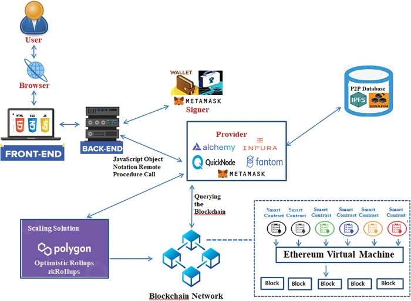

Home ｜
World Wide Web｜
TCP/IP｜
Web Browsers｜
Web Servers｜
Uniform Resource Locator｜
Domain Name Server｜
Hypertext Transfer Protocol｜
Intranet｜
Extranet｜
File Transfer Protocol｜
Hypertext Mark-up Language｜
Web 1.0｜
Web 2.0｜
Web 3.0｜
Web 4.0｜
Web 3.0
Web 3.0
WEB 3.0 (THE SEMANTIC WEB)
Web 3.0 is the third generation of the internet that focuses on
intelligent systems and machine understanding.
It allows websites and applications to understand information in a more human-like way using
Artificial Intelligence (AI) and data analysis.
Web 3.0 aims to create a more personalized and connected online experience where users can interact with smart systems
that understand their needs and preferences.
Features of Web 3.0
- Artificial Intelligence integration
- Personalized content
- Data-driven services
- Semantic understanding of data
- Improved privacy and security
